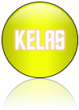

| KINGDOM |
Kingdom merupakan tingkatan takson tertinggi makhluk hidup. Kebanyakan ahli Biologi sependapat bahwa makhluk hidup di dunia ni dikelompokkan menjadi 5 kingdom (diusulkan oleh Robert Whittaker tahun 1969). Kelima kingdom tersebut antara lain : Monera, Proista, Fungi, Plantae, dan Animalia |
| DIVISIO |
Nama filum digunakan pada dunia hewan, dan nama division digunakan pada tumbuhan. Filum atau division terdiri atas organism-organisme yang memiliki satu atau dua persamaan ciri. Nama filum tidak memiliki akhiran yang khas sedangkan nama division umumnya memiliki akhiran khas, antara lain phyta dan mycota. |
 |
| KELAS |
Kelompok takson yang satu tingkat lebih rendah dari filum atau divisio. |
| ORDO |
Setiap kelas terdiri dari beberapa ordo. Pada dunia tumbuhan, nama ordo umumnya diberi akhiran ales. |
| FAMILI |
Family merupakan tingkatan takson di bawah ordo. Nama family tumbuhan biasanya diberi akhiran aceae, sedangkan untuk hewan biasanya diberi nama idea. |
| GENUS |
Genus adalah takson yang lebih rendah dariada family. Nama genus terdiri atas satu kata, huruf pertama ditulis dengan huruf capital, dan seluruh huruf dalam kata itu ditulis dengan huruf miring atau dibedakan dari huruf lainnya. |
| SPESIES |
Species adalah suatu kelompok organism yang dapat melakukan perkawinan antar sesamanya untuk menghasilkan keturunan yang fertile (subur) |